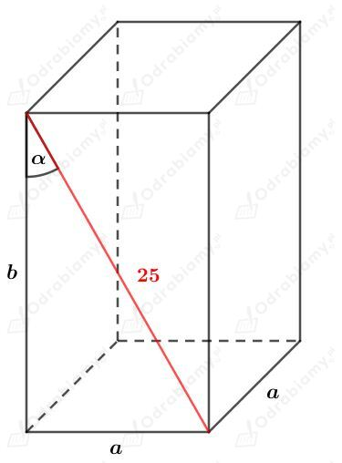
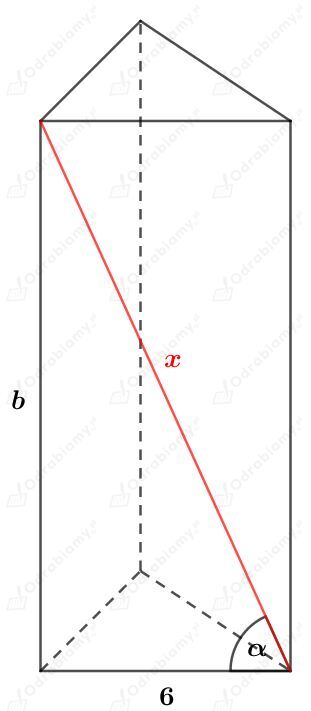
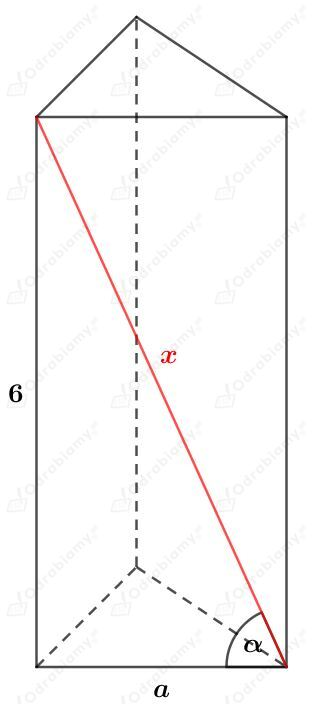
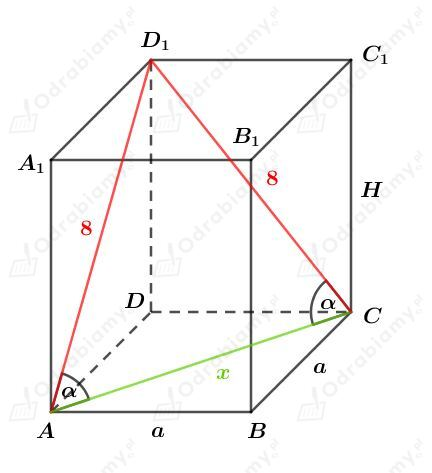

Rysunek:

Z treści zadania wiemy, że sin𝛼=0,28.
Korzystając z definicji funkcji sinus w trójkącie prostokątnym mamy:
Korzystając z twierdzenia Pitagorasa mamy:
Obliczmy pole powierzchni podstawy tego graniastosłupa. Mamy:
Obliczmy pole powierzchni bocznej tego graniastosłupa. Mamy:
Wyznaczmy pole powierzchni całkowitej tego graniastosłupa. Mamy:
a)
Rysunek:

Z treści zadania wiemy, że
Korzystając z definicji cosinusa dla trójkąta prostokątnego mamy:
Korzystając z twierdzenia Pitagorasa mamy:
Obliczmy pole powierzchni podstawy, czyli pole trójkąta równobocznego o boku długości 6 cm. Mamy:
Obliczmy pole powierzchni bocznej. Mamy"
Obliczamy pole powierzchni całkowitej tego graniastosłupa. Mamy:
b)
Rysunek:

Z treści zadania wiemy, że
Korzystając z definicji cosinusa dla trójkąta prostokątnego mamy:
i dalej
Korzystając z twierdzenia Pitagorasa mamy:
Podstawmy x=3a mamy:
czyli
Obliczamy pole powierzchni podstawy, korzystając ze wzoru na pole trójkąta równobocznego. Mamy:
Obliczamy pole powierzchni bocznej. Mamy:
Obliczamy pole powierzchni całkowitej tego graniastosłupa. Mamy:
Rysunek:

Wiemy dodatkowo, że cos𝛼=1/4.
Korzystając z twierdzenia cosinusów dla trójkąta ACD1 mamy:
Liczba x jest długością, więc x>0, zatem x=4 cm.
Korzystając ze wzoru na długość przekątnej kwadratu mamy:
Korzystając z twierdzenia Pitagorasa dla trójkąta ADD1 mamy:
Powierzchnia boczna zbudowana jest z czterech przystających prostokątów o bokach długości 2√2 cm i 2√14 cm.
Wyznaczmy pole powierzchni bocznej tego graniastosłupa. Mamy: